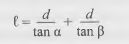

Werner Teknik Bilimler profesörünün ofisine çağrıldı. Odaya girdiğinde parlak tüylü, uzun bacaklı üç av köpeği onun etrafında dönmeye başladı. Odayı bir çift yeşil abajurlu masa lambası aydınlatıyordu ve Werner gölgelerin arasından ansiklopediler, değirmen modelleri, minyatür teleskoplar ve prizmalarla dolu raflar görebiliyordu. Kendisi de az önce gelmiş gibi görünen ve pirinç düğmeli paltosunu giymiş olan Doktor Hauptmann büyük çalışma masasının arkasında duruyordu. Gür kakülleri fildişi rengindeki alnını çerçeveliyordu. Parmaklarını deri eldivenlerinden tek tek çıkardı.
“Şömineye bir odun at, lütfen.”
Werner rotasını değiştirerek odayı bir boydan bir boya adımladı ve kömürleri karıştırarak canlandırdı.
Köşede üçüncü bir kişinin oturmakta olduğunu fark etti. Kendisinden çok daha küçük yapılı biri için yapılmış olan bir koltukta uykulu bir şekilde oturmakta olan bu iri yarı genç, Frank Volkheimer idi. Kuzey köylerinden birinden gelen, yüksek tabakaya mensup, on yedi yaşındaki bu iri yarı çocuk, daha genç askeri öğrenciler arasında bir efsane olmuştu. Volkheimer’ın üç tane birinci sınıf öğrencisini başının üzerinde tutarak nehrin karşı kıyısına geçirdiği, lastiğinin altına kriko koyulabilsin diye Komutan’ın arabasını kuyruğundan tutup kaldırdığı söyleniyordu. Rivayete göre, bir komünistin gırtlağını elleriyle paralamıştı. Bir başka rivayete göre de, başkalarına zarar vermesini önlemek için burnundan yakaladığı başıboş bir köpeğin iki gözünü birden çıkarmıştı.
Ona Dev adını takmışlardı. Werner, loş ve titreşen ışıkta bile Volkheimer’ın kollarındaki damarların asma filizi gibi yükseldiğini görebiliyordu.
“Hiçbir öğrenci bugüne kadar motor yapmayı başaramadı,” dedi Hauptmann, sırtı kısmen Volkheimer’a dönük olarak. “Yardım almadan yani.”
Werner ne diyeceğini bilemediği için sesini çıkartmadı. Ateşi bir kez daha karıştırdı, bacanın içinde kıvılcımlar yükseldi. “Trigonometriden anlıyor musun, asker?”
“Sadece kendi kendime öğrenebildiğim kadar, efendim.”
Hauptmann çekmeceden bir kâğıt çıkardı ve üzerine bir şeyler yazdı.
“Bunun ne olduğunu biliyor musun?”
Werner gözlerini kısarak baktı.

“Bir formül, efendim.”
“Neye yaradığını anlayabiliyor musun?”
“Sanırım, iki bilinen noktayı kullanarak bilinmeyen üçüncü bir noktanın yerini saptamaya yarayan bir yöntem bu.”
Hauptmann’ın mavi gözleri parıldadı; yerde, tam önünde duran çok değerli bir şeyi keşfetmiş birisine benziyordu.
“Eğer sana bilinen noktaları ve aralarındaki mesafeyi verirsem, asker, bunu çözebilir misin? Üçgeni çizebilir misin?”
“Sanırım, evet.”
“Benim çalışma masamda otur, Pfennig. Benim sandalyemi al. Al, bir de kalem.”
Sandalyede otururken Werner’in çizmelerinin ucu yere değmiyordu. Şömineden çıkan alevler odaya ısı pompalıyordu. Devasa çizmeleri ve cüruf briketi gibi çenesiyle dev Frank Volkheimer’ı bir kenara bırak, diye düşündü. Ateşin önünde gezinmekte olan küçük profesörü, vaktin bu kadar geç olmasını, köpekleri ve ilginç şeylerle parıldayan rafları da bir kenara bırak. Şu anda sadece şuna odaklan.
Werner, Hauptmann’ın verdiği sayıları denkleme yerleştirdi. Belirli bir alanda, aralarındaki mesafeyi adımlayan ve gözlerini bir yelkenli veya bir gemi bacası gibi uzaktaki belirli bir noktaya diken iki gözlemci hayal etti. Bir sürgülü hesap cetveli isteyince, profesör bunu bekliyormuş gibi çalışma masasının üzerine hemen bir tane koydu. Werner ona hiç bakmadan cetveli aldı ve sinüsleri hesap etmeye koyuldu.
Volkheimer izliyordu. Ufak tefek doktor da elleri arkasında volta atıyordu. Şöminenin ateşi birden harladı. Sadece köpeklerin nefes alıp verişleri ve hesap cetvelinin ibresinin tıklama sesi duyuluyordu.
Werner sonunda, “On altı-nokta-dört-üç, Herr Doktor,” dedi. Üçgeni çizdi ve her bir bölüt arasındaki mesafeyi tanımlayarak kâğıdı geri verdi. Hauptmann deri kaplı bir deftere bakarak kontrol etti. Volkheimer hafifçe sandalyesinde kıpırdandı; bakışı hem ilgi duyar gibi hem de üşengeçti. Küçük profesör defterdekileri okurken avuçlarından birini masaya dayadı, bir düşüncenin geçmesini bekliyormuş gibi hafifçe gülümsüyordu. Werner bir an için aniden gelen, önsezisel bir korkuya kapıldı, ama sonra Hauptmann ona tekrar bakınca bu duygusu geçer gibi oldu.
“Başvuru kâğıtlarında, buradan ayrıldığında Berlin’de elektrik mekaniği okumak istediğin yazılı… Ayrıca, öksüzsün, doğru mu?”
Tekrar Volkheimer’a bir bakış fırlattı. Werner onaylar gibi başını salladı. “Kız kardeşim…”
“Bir bilim adamının neyi araştıracağını iki şey tayin eder, asker. Kendisinin ve çağının ilgi alanları… Anlıyor musun?”
“Sanırım.”
“Olağanüstü bir dönemden geçiyoruz, asker.”
Werner’in içini bir heyecan kapladı. Kitaplarla dolu şöminenin ısıttığı odalar… Önemli şeyler hep o tür yerlerde olur, diye düşündü.
“Akşam yemeğinden sonra laboratuvara çalışmaya geleceksin. Her gece. Pazar günleri de dahil.”
“Peki, efendim.”
“Yarın başla.”
“Peki, efendim.”
“Volkheimer sana göz kulak olacak. Şu bisküvileri al.” Kurdeleyle bağlanmış teneke bir kutu çıkarttı. “Bir de nefes al, Pfennig. Nefes al. Laboratuvarıma her geldiğinde nefesini böyle tutamazsın.”
“Peki, efendim.”
Koridorlarda ıslık çalan hava öylesine temizdi ki, Werner’in başı dönmeye başladı. Üçlü bir pervane grubu yatakhanenin tavanına yakın bir yerde uçuşuyordu. Werner karanlıkta çizmelerini çıkarttı ve pantolonunu katladı. Bisküvi tenekesini de üstüne yerleştirdi. Ranzasının köşesinden Frederick onu izliyordu.
“Nereye gittin?”
“Bisküvi aldım,” diye fısıldadı Werner. “Bugün bir puhu baykuşunun sesini duydum.”
“Şşşş,” diye tısladı iki ranza ötedeki bir çocuk.
Werner bir bisküvi uzattı. Frederick, “Onlarla ilgili hiç bilgin var mı? Çok nadir ve planör kadar büyük türlerdir. Bu duyduğum, muhtemelen kendisine yeni bir alan arayan genç bir erkekti. Tören alanının yanındaki kavak ağaçlarından birinin üstündeydi.”
“Oh,” dedi Werner, Gözlerinin önünde Yunan alfabesinden harfler uçuşuyordu: İkizkenar üçgenler, betalar, sinüs eğrileri… Kendisini beyaz bir kıyafet içinde, makinelerin arasından geçerken görüyordu.
Günün birinde muhtemelen büyük bir ödül kazanacak.
Şifre kırma, roket ateşleme, güncel olan her şey.
Olağanüstü bir dönemden geçiyoruz.
Koridordan ranza amirinin çizmelerinin topuk seslerinin tıkırtısı geldi. Frederick hemen ranzasına arka üstü devrildi. “Onu göremedim,” diye fısıldadı, “Ama onu gayet iyi duydum.”
“Kapa çeneni!” diye bağırdı ikinci bir çocuk. “Hepimizi kamçılatacaksın.”
Frederick başka bir şey söylemedi. Werner çiğnemeyi bıraktı. Ranza amirinin çizmelerinin sesi duyulmaz oldu: Ya gitmişti ya da kapının dışında duruyordu. Civarda birisi odun yarıyordu ve Werner takoza vuran baltanın çınlamasını ve etrafındaki tüm çocukların korku dolu nefeslerinin sesini dinliyordu.